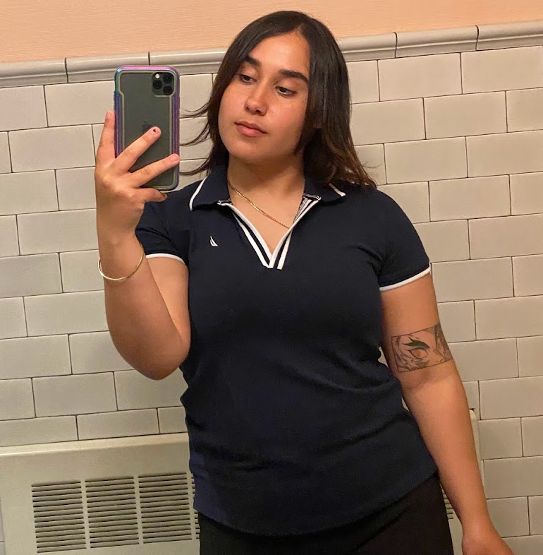

Bio: I'm a current student at NYCCT and I got to epermit this class because it was online.
I am a senetor for student govement assosication as I represent the evening students I also work part
time for the deparment of Sanitation as an Human resorce assosiate college aid.
My hobbies is travling, watching movies,
and spending time with friends and family.
Below is a photo of myself where I was at an event with my old job where I was a sailor.
